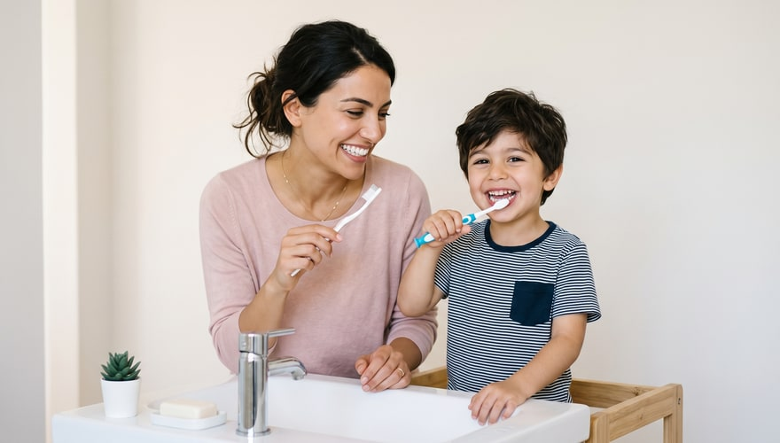
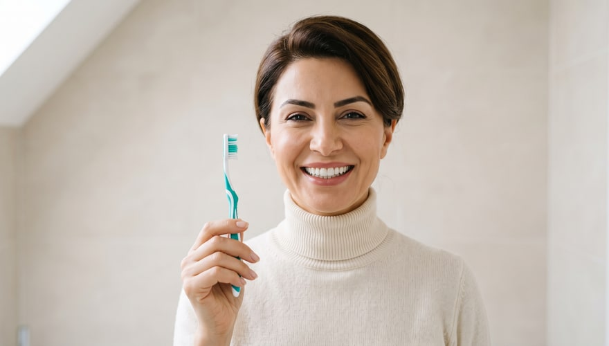
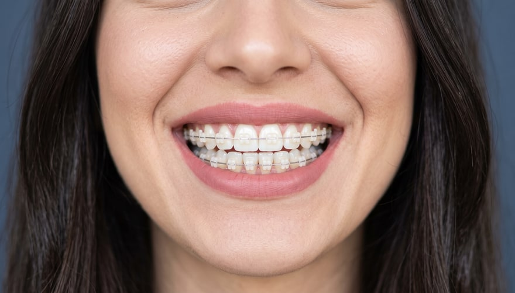

Blog Articles
Blog content that feeds the treatment pages — live-data-anchored and regulation-safe. Every article has ready-to-paste WordPress HTML plus Article/FAQPage schemas.
 Dental Health After 60: Tooth Loss, Dentures and Implant OptionsTR: 60 Yaş Üstünde Diş Sağlığı: Kayıplar, Protezler ve İmplant SeçenekleriTooth loss, dry mouth and denture options after 60: when do implants come into play, and what should carers watch for?
Dental Health After 60: Tooth Loss, Dentures and Implant OptionsTR: 60 Yaş Üstünde Diş Sağlığı: Kayıplar, Protezler ve İmplant SeçenekleriTooth loss, dry mouth and denture options after 60: when do implants come into play, and what should carers watch for?

Evidence-Based Ways to Prevent Tooth Decay in Children: A Practical Guide for FamiliesTR: Çocuklarda Diş Çürüğünü Önlemenin Kanıta Dayalı Yolları: Ailelere Pratik RehberPreventing tooth decay in children: first check-up timing, baby bottle decay, brushing by age, sugar frequency and preventive treatments. Teeth Whitening: 8 Myths People Still BelieveTR: Diş Beyazlatma Hakkında Doğru Bilinen 8 YanlışDoes lemon and baking soda whiten teeth? Does whitening damage enamel, and how long does it last? We correct 8 common myths about teeth whitening.
Teeth Whitening: 8 Myths People Still BelieveTR: Diş Beyazlatma Hakkında Doğru Bilinen 8 YanlışDoes lemon and baking soda whiten teeth? Does whitening damage enamel, and how long does it last? We correct 8 common myths about teeth whitening.

7 Factors That Determine How Long a Dental Crown LastsTR: Diş Kaplamasının Ömrünü Belirleyen 7 EtkenWhy does a dental crown's lifespan vary from person to person? From oral hygiene to clenching, check-ups to material choice — 7 factors explained here. Dental Health in Pregnancy: What to Treat in Each Trimester, and What to PostponeTR: Hamilelikte Diş Sağlığı: Hangi Dönemde Ne Yapılır, Ne Ertelenir?Bleeding gums, nausea-related enamel wear, trimester-by-trimester planning, X-rays and breastfeeding: a pregnancy dental health guide.
Dental Health in Pregnancy: What to Treat in Each Trimester, and What to PostponeTR: Hamilelikte Diş Sağlığı: Hangi Dönemde Ne Yapılır, Ne Ertelenir?Bleeding gums, nausea-related enamel wear, trimester-by-trimester planning, X-rays and breastfeeding: a pregnancy dental health guide.
 Healing After a Dental Implant: What to Expect, Stage by StageTR: İmplant Sonrası İyileşme: Aşama Aşama Ne Beklemeli?Implant healing, stage by stage: the first 24 hours, week one, bone integration, the restoration stage and long-term care. Which symptoms need attention?
Implant or Bridge? A Decision Guide for Replacing a Missing ToothTR: İmplant mı Köprü mü? Eksik Diş Tedavisinde Karar RehberiImplant or bridge? How each option works, the role of neighbouring teeth and bone, and the care differences — a guide to help you decide.
Healing After a Dental Implant: What to Expect, Stage by StageTR: İmplant Sonrası İyileşme: Aşama Aşama Ne Beklemeli?Implant healing, stage by stage: the first 24 hours, week one, bone integration, the restoration stage and long-term care. Which symptoms need attention?
Implant or Bridge? A Decision Guide for Replacing a Missing ToothTR: İmplant mı Köprü mü? Eksik Diş Tedavisinde Karar RehberiImplant or bridge? How each option works, the role of neighbouring teeth and bone, and the care differences — a guide to help you decide.

Clear Aligners or Braces? A Guide to Orthodontics in AdulthoodTR: Şeffaf Plak mı Diş Teli mi? Yetişkinlikte Ortodonti RehberiClear aligners or braces — what changes in daily life? A look at appearance, hygiene, eating and appointments to help with adult orthodontics. How Does Stress Affect Your Teeth? Clenching, Grinding and Jaw PainTR: Stres Dişlerinizi Nasıl Etkiler? Sıkma, Gıcırdatma ve Çene AğrısıHow does stress trigger clenching and grinding? Daytime versus night-time patterns, the marks left on teeth, jaw joint effects, and daily measures.